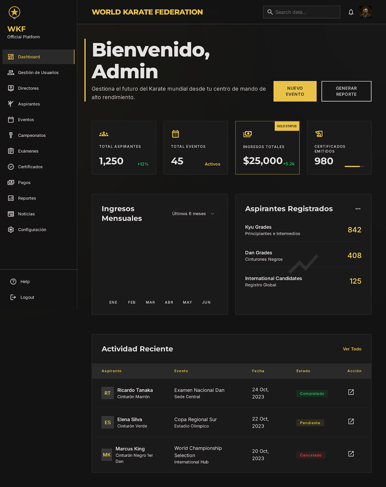
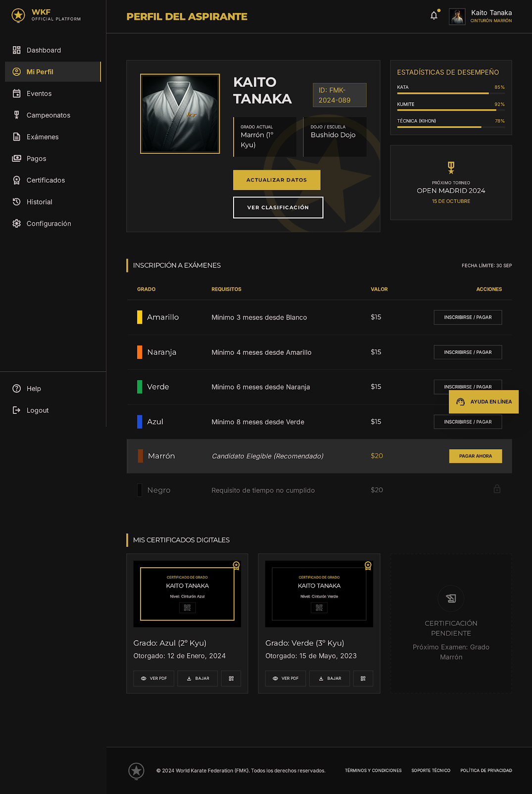

Gestion de atletas
Perfiles, grados, historial, documentos y postulaciones con informacion centralizada.
Federacion digital de alto rendimiento
Centraliza atletas, clubes, pagos, eventos, certificaciones y contenido federativo en una experiencia premium, segura y lista para crecer.

Sobre nosotros
FMK Global conecta la gestion deportiva con una interfaz clara para administradores, directores, aspirantes y atletas. La arquitectura visual prioriza trazabilidad, rendimiento y una experiencia consistente en escritorio y movil.
Servicios
Perfiles, grados, historial, documentos y postulaciones con informacion centralizada.
Calendarios, inscripciones, sedes, convocatorias y seguimiento de competencias.
Emision, consulta y control de certificados con datos verificables.
Historial de pagos, estados, comprobantes y visibilidad para equipos directivos.

Caracteristicas
Galeria
"FMK Global transforma procesos fragmentados en una experiencia clara para atletas, clubes y directivos."
Comite tecnico federativo"La visibilidad de pagos, eventos y certificaciones reduce carga administrativa y mejora la toma de decisiones."
Direccion administrativaFAQ
Si. El proyecto usa HTML5, CSS3 y JavaScript Vanilla, por lo que puede publicarse en hosting estatico.
Si. La base es mobile first y se adapta a tablet, escritorio y pantallas amplias.
Si. La carpeta components contiene fragmentos HTML reutilizables para navbar, hero, galeria y footer.
Una experiencia digital clara para operar, certificar, comunicar y crecer.
Contactar equipo FMK